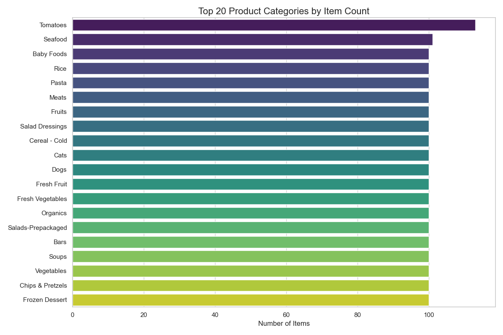
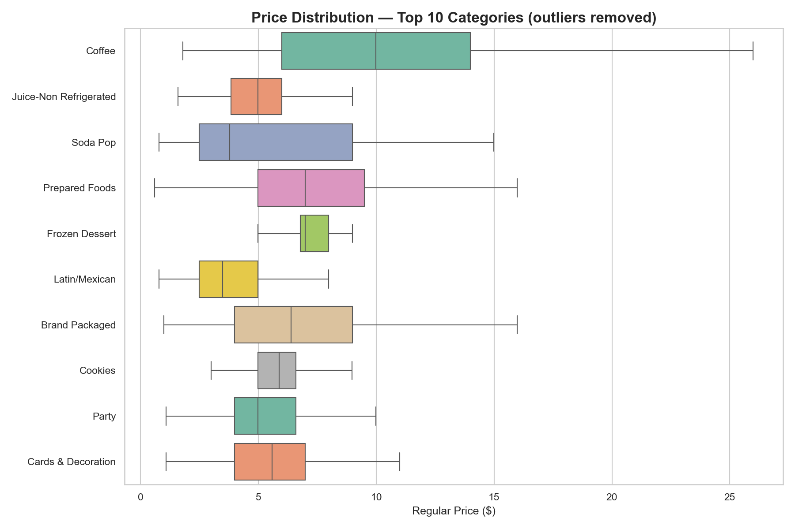
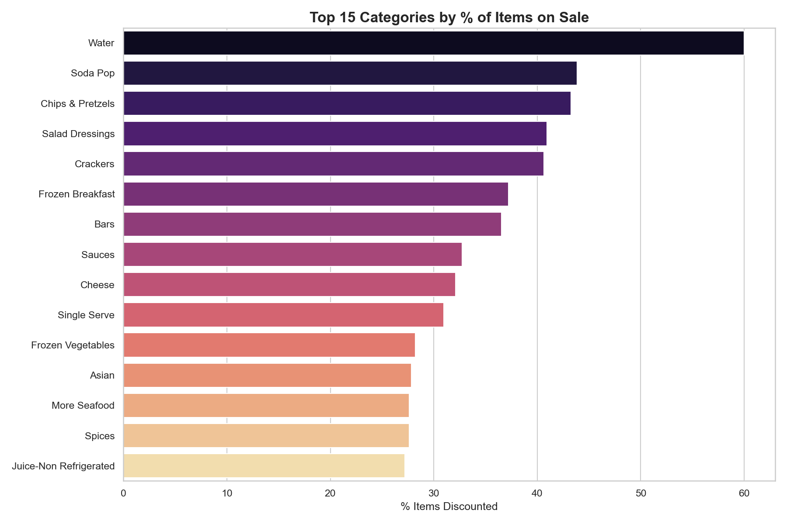
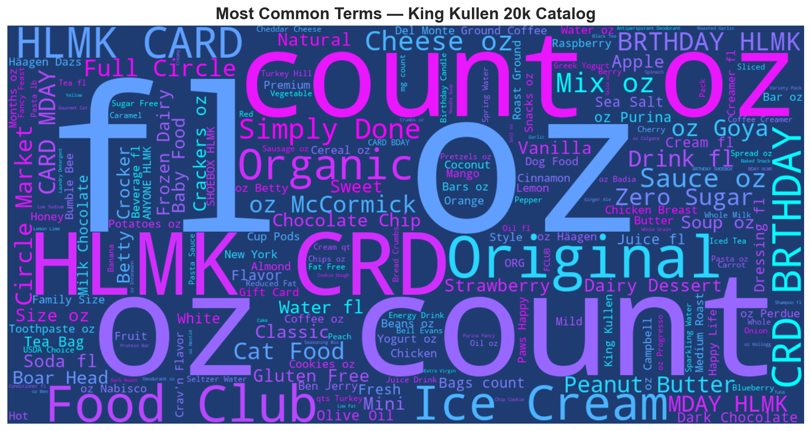
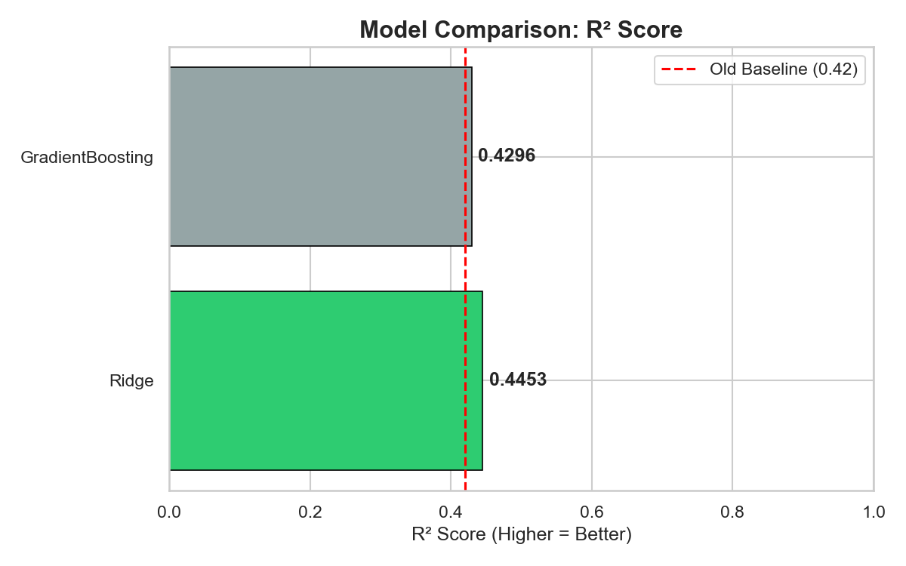
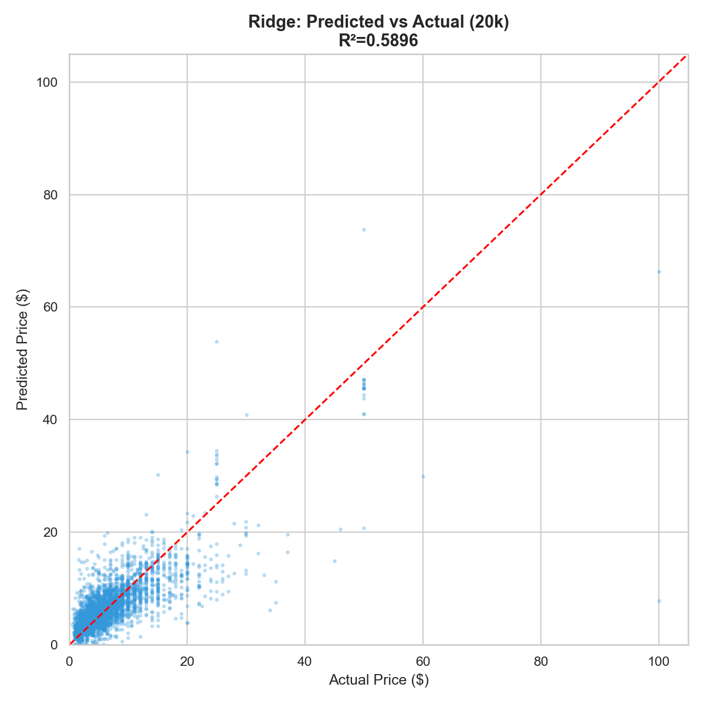
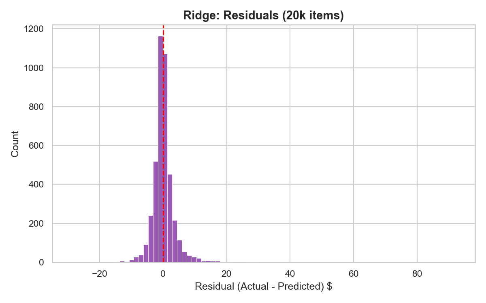

Longitudinal Grocery Pricing Study
A living catalog, crawled weekly.
More than 16,000 unique products across hundreds of sub-categories. Every item pulled directly from King Kullen's Freshop API — not scraped from pages. Prices recorded weekly via GitHub Actions. The goal is a multi-month time series that shows what changed, not just a pile of snapshots. Explore the price time series and weekly comparisons.
Exploratory Data Analysis
Three angles on the data: shelf-space allocation by category, price variance within categories, and which aisles King Kullen discounts most aggressively.

The 20 most-populated sub-categories by item count. Pantry staples and broad beverage categories dominate the catalog. This asymmetry will be the largest source of model bias in early training runs.

Boxplots for the 10 most-populated categories. Wide interquartile ranges signal a mix of generic and premium SKUs in the same aisle. Narrow boxes signal commodity sections where price competition has compressed the range.

Categories with the highest proportion of items currently on sale, filtered to categories with 50 or more products. These are the aisles where promotional cadence is the strongest pricing signal.

Word cloud built from 9,834 product names. High-frequency terms like "organic," "oz," and brand names dominate. These are the raw materials for the TF-IDF feature layer in the Ridge regression model.
Price Prediction Model
Two models trained on 20,716 items. One winner. Ridge outperforms Gradient Boosting here because the feature space is high-dimensional and sparse. TF-IDF over product names creates 3,000+ dimensions — exactly the regime where regularized linear models shine.

Ridge at R²=0.590 edges out GBM at 0.519. The 9k baseline was 0.445 — doubling the dataset delivered a clean +32% lift. The gap will continue widening as weekly snapshots accumulate.

Each dot is a product from the 4,143-item test holdout. Points cluster tightly near the diagonal for everyday staples. The model now generalises visibly better than the 9k run — the scatter cloud is narrower, and the diagonal is cleaner through the $5–$25 range.

Bell-shaped, centered near zero, noticeably narrower than the 9k run. RMSE dropped from $5.86 to $3.77 — purely from having 2.1x more training examples. This confirms the earlier hypothesis: data volume was the binding constraint, not model architecture.
Technical Architecture
The crawler boots by parsing King Kullen's homepage PreloadedState JSON, extracting 476 category IDs from the navigation tree. No brittle CSS selectors. If they restructure the nav, the IDs survive in the JSON.
Each category ID hits storefrontgateway.shopkingkullen.com/api/stores/23/categories/{id}/groupby with a polite 1-second delay between requests. The endpoint returns up to 100 products per page. The crawler paginates until the page is empty.
Each run writes a fresh data/snapshots/YYYY-MM-DD.jsonl committed back to this repo. Every record carries UPC, name, current price, regular price, category labels, and a UTC timestamp. The git history is the database.
A schedule: cron workflow runs the full crawl at 06:00 UTC each Sunday. The run takes roughly 11 minutes. The workflow also has workflow_dispatch for manual triggers whenever a mid-week check is needed.
After each crawl, the pipeline compares matched UPCs with the prior snapshot, counts increases, decreases, additions, removals, and sale items, then publishes the weekly report. The model remains a separate experiment until automated retraining and evaluation are implemented.